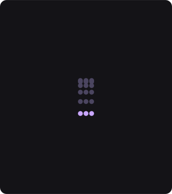
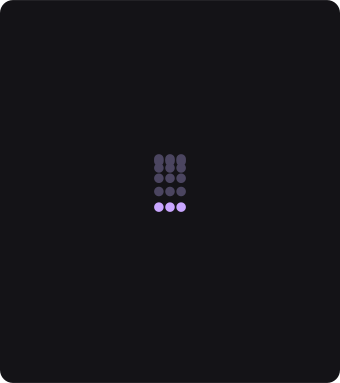

Nos quatro tutoriais anteriores você disse onde cada objeto está, como ele anda e quem é afetado. Tudo o que aconteceu na tela foi você que mandou acontecer.
Este grupo é diferente: você deixa de dizer onde a peça vai parar e passa a dizer que forças agem sobre ela. Onde ela pára é uma consequência — e é aí que uma animação começa a parecer viva em vez de desenhada.
Cole isto inteiro num terminal. Na primeira vez ele compila (alguns minutos); depois abre em segundos.
O Collider é literalmente uma coisa que se põe num sítio — um chão, um prato, uma caixa. Até este ciclo, punha-se digitando números em dois controlos. Agora ele tem caixa na tela, como qualquer objeto.
Collider.
Box Width e Box Height mexem-se junto.Shape do
mesmo cartão estão quatro opções: Plane, Disc,
Bowl e Box. Um disco e uma taça medem-se por um raio, uma caixa por
duas extensões — e a alça passa a medir o que aquela forma de facto
lê. Este é o primeiro nó da casa cuja alça depende de um controlo, e
não só do tipo de nó.O cartão Wind é a gravidade desta cena: uma força apontada para baixo. Mas há duas maneiras de uma força agir, e elas dão animações completamente diferentes.
Wind, na linha Acts As, troque Force por
Target Velocity.
Air Resistance aparece no cartão.Air Resistance.
Air Resistance não tiver aparecido,
você ainda está em Force — e ali ela está escondida de
propósito: em Force nada a lê.
Acts As · Force
Acts As · Target VelocityMode, e não dizia nada.
A palavra Mode aparecia em 26 cartões deste app, sobre 24 perguntas
diferentes — era a palavra mais usada do catálogo e a que menos ensinava. Aqui a
pergunta tem nome: como é que esta força age? — e a resposta
lê-se de uma vez: Acts As: Target Velocity.Uma força constante é previsível demais para parecer natural. O Wind sabe soprar aos solavancos, e cada peça recebe a rajada dela — não todas ao mesmo tempo.
Wind, abra a seção Gust
(clique no título dela).
Gust.
Timing e arraste Gust Frequency.
Gust) e em que ritmo (Timing). Os
controlos que estão em cima, soltos, são a razão de existir do nó: eles
nunca se escondem.A cena que você abriu usa cinco destes nós. Os outros sete resolvem o resto.
Life Cycle decide se a simulação corre
para sempre, uma vez, ou em ciclo (é o que faz esta cena
recomeçar sozinha).Placement e
Falloff.A tabela abaixo é gerada do próprio app: ela lista o que cada cartão mostra quando você larga o nó, com a faixa e a unidade de cada controlo.
| controlo | faixa | unidade |
|---|---|---|
| Shape | Plane · Disc · Bowl · Box | |
| Offset | -1000 a 1000 | px |
| Angle | -180 a 180 | deg |
| Radius From | Point · Fixed · Sprite Size | |
| Bounce | 0 a 1 | |
| Friction | 0 a 1 | |
| Restitution Randomness | 0 a 1 |
Só noutro modo: Center X aparece quando Shape é Disc ou Bowl ou Box · Center Y aparece quando Shape é Disc ou Bowl ou Box · Radius aparece quando Shape é Disc ou Bowl · Box Width aparece quando Shape é Box · Box Height aparece quando Shape é Box · Particle Radius aparece quando Radius From é Fixed · Size Scale aparece quando Radius From é Sprite Size.
| controlo | faixa | unidade |
|---|---|---|
| Angle | 0 a 360 | graus |
| Strength | 0 a 40 | |
| Acts As | Force · Target Velocity | |
| Gust | 0 a 1 | |
| Seed | 0 a 100 | |
| Octaves | 1 a 4 | |
| Noise Type | fBm · Turbulence · Ridged | |
| Gust Frequency | 0.1 a 5 | |
| Loop Period | 0 a 20 |
Só noutro modo: Air Resistance aparece quando Acts As é Target Velocity.
| controlo | faixa | unidade |
|---|---|---|
| Substeps | 1 a 16 (digitável até 64) | |
| Start | 0 a 10 | s |
| Life Cycle | Forever · Once · Loop |
Só noutro modo: Duration aparece quando Life Cycle é Once ou Loop · Loop Delay aparece quando Life Cycle é Loop.
| controlo | faixa | unidade |
|---|---|---|
| Damping | 0 a 1 | |
| Speed Limit | 0 a 4000 | px |
| Min Speed | 0 a 4000 | px |
| Angular Damping | 0 a 1 |
| controlo | faixa | unidade |
|---|---|---|
| Strength | 0 a 40 | |
| Repel | liga / desliga | |
| Target X | -1000 a 1000 | px |
| Target Y | -1000 a 1000 | px |
| Target | Point · Stream | |
| Radius | 10 a 2000 (digitável até 209715187.5) | px |
| Curve | Linear · Quad · Smooth · Smoother | |
| Min Distance | 0 a 20 | |
| Peak Distance | 0 a 20 | |
| Reversal Distance | 0 a 20 |
Só noutro modo: Predict aparece quando Target é Stream.
| controlo | faixa | unidade |
|---|---|---|
| Center X | -1000 a 1000 | px |
| Center Y | -1000 a 1000 | px |
| Strength | 0 a 40 | |
| Radius | 10 a 2000 (digitável até 209715187.5) | px |
| Curve | Linear · Quad · Smooth · Smoother | |
| Acts As | Force · Target Velocity | |
| Clockwise | liga / desliga |
Só noutro modo: Air Resistance aparece quando Acts As é Target Velocity.
| controlo | faixa | unidade |
|---|---|---|
| Strength | 0 a 40 | |
| Scale | 0.01 a 3 | |
| Octaves | 1 a 4 | |
| Seed | 0 a 100 | |
| Noise Type | fBm · Turbulence · Ridged | |
| Lacunarity | 1 a 4 | |
| Roughness | 0 a 1 | |
| Offset X | -20 a 20 | |
| Offset Y | -20 a 20 | |
| Speed | 0 a 2 (digitável até 5) | |
| Loop Period | 0 a 20 |
| controlo | faixa | unidade |
|---|---|---|
| Coefficient | 0 a 10 (digitável até 20) | |
| Drag X | 0 a 3 | |
| Drag Y | 0 a 3 |
| controlo | faixa | unidade |
|---|---|---|
| Level | -1000 a 1000 | px |
| Density | 0 a 40 | |
| Depth | 1 a 300 (digitável até 26214398.438) | px |
| Drag | 0 a 20 | |
| Wave Amplitude | 0 a 200 | px |
| Wave Length | 5 a 2000 | px |
| Waves | 1 a 4 | |
| Wave Speed | -5 a 5 |
| controlo | faixa | unidade |
|---|---|---|
| Rate | 0 a 60 (digitável até 15360) | |
| Scatter | liga / desliga | |
| Seed | 0 a 9999 | |
| Burst | 0 a 32 (digitável até 256) | |
| Burst Speed | 0 a 8 | |
| Probability | 0 a 1 |
| controlo | faixa | unidade |
|---|---|---|
| Life | 0 a 20 | s |
| Variance | 0 a 1 | |
| Seed | 0 a 9999 |